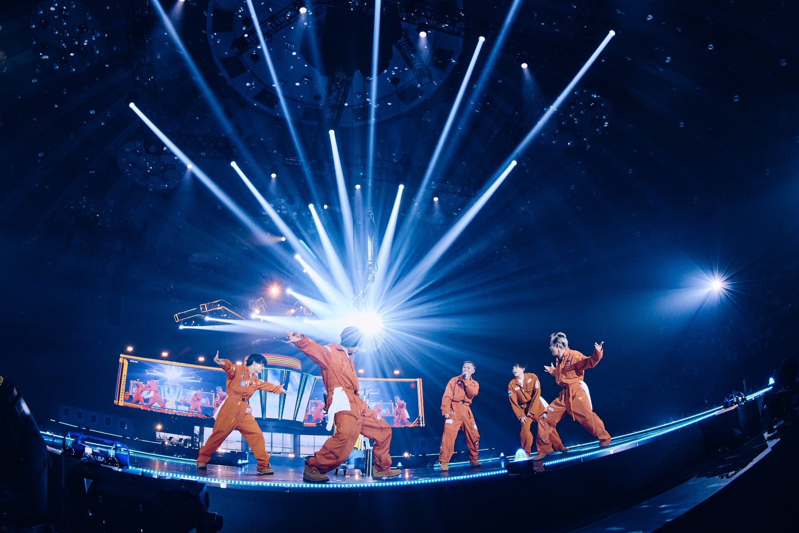
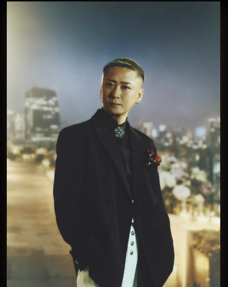

TAIKI KUDO
工藤 大輝
PERFORMER
VIEW MORE →4オクターブのツインボーカルを中心に、高い歌唱力とパフォーマンスで人々を魅了する5人組。メンバーそれぞれが作詞・作曲・プロデュースにも携わり、唯一無二の音楽を生み出し続けている。
VIEW THE FIVE →
5人それぞれの表情と個性を、そのままカードに。クリックすると詳細が開きます。



代表曲からDa-iCEの音楽へ。Ver.4.0では検索できる独立MUSICページを新設しました。
本サイトはDa-iCEを応援する目的で制作された非公式ファンメイドサイトです。Da-iCE、所属事務所、レコード会社、その他関係各社とは関係ありません。